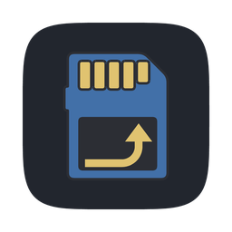
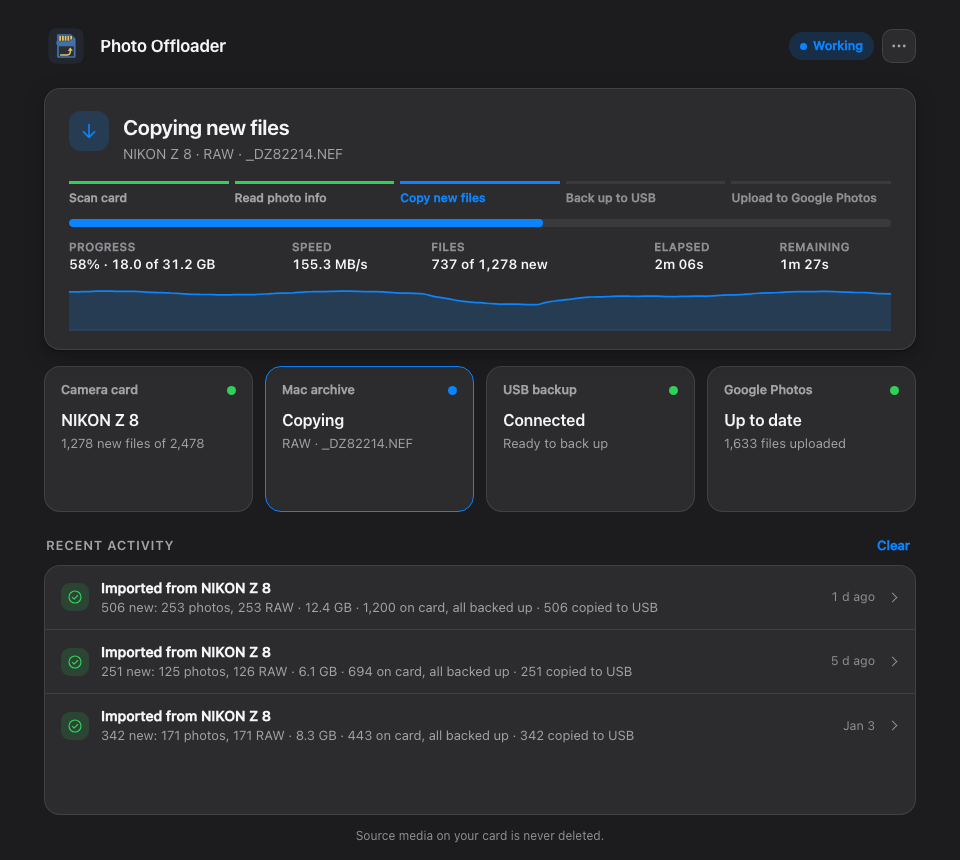

Photo OffloaderInsert a camera card into your Mac and Photo Offloader does the rest. It copies everything to the Mac and checks each copy with SHA-256, mirrors the archive to a USB drive, and can upload JPGs and video to Google Photos. It never deletes anything from the card.

- Get startedRequirements (macOS only for now), install and uninstall
- Using Photo OffloaderThe dashboard and menu bar, and what each step means
- Google Photos setupA step-by-step guide, with a command that checks your setup
- How it worksThe safety model, archive layout, catalog and logs
- ConfigurationSettings and environment variables
- DevelopmentRepository layout, tests and project rules
- ContributingReporting a bug and proposing a change